| 标记完成并返回 |
练习: 定义约束 - 办公椅腿
目标
成功完成此练习后，您将能够：
- 在模型中定义约束。
- 在模型中定义载荷。
- 定义并运行静态分析。
- 审阅汇总报告。
- 创建结果窗口并查看结果。
假定背景
在这个练习中，您将检查由脆性材料制成的结构件。您的目标是查明此材料是否能够承受模型中的最大应力。您也可以使用 Creo Simulate 改进创建和检查结果的方式。
要分析的模型是一个承受 4500 N 载荷的椅子。如果材料、载荷和约束也是对称的，则可以使用对称性，但是，在这种情况下，是径向的。
“关闭窗口”(Close Window) “拭除未显示的”(Erase Not Displayed)
“拭除未显示的”(Erase Not Displayed) 
 Simulate_Modeling\Constraints
Simulate_Modeling\Constraints
 OFFICE_CHAIR_LEVER_SIMULATE.PRT
OFFICE_CHAIR_LEVER_SIMULATE.PRT
|
|
||
 |
Creo Parametric 用户打开 OFFICE_CHAIR_LEVER。 | |
|
|
||
-
任务 1. 在模型中定义约束。
1. 在功能区中，选择“主页”(Home) 选项卡。
2. 在“约束”(Constraints) 组中单击“位移”(Displacement)
 。将出现“约束”(Constraint) 对话框。
。将出现“约束”(Constraint) 对话框。
3. 按住 CTRL 键并在模型中选择如图所示的四个曲面。应该在“约束”(Constraint) 对话框的“参考”(References) 部分列出四个曲面。
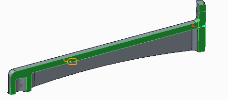 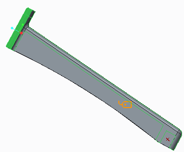
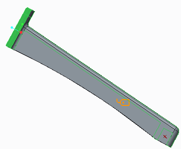4. 在“坐标系”(Coordinate System) 部分中，选择“选定”(Selected)。
5. 在模型树中，展开“模拟特征”(Simulation Features)，然后选择 SYMMETRY_CONSTRAINT_UCS。
6. 在“平移”(Translation) 部分单击“自由平移”(Free Translation)
 用于 R 和 Z 平移。对话框现在应如图所示。
用于 R 和 Z 平移。对话框现在应如图所示。
7. 单击“确定”(OK)。
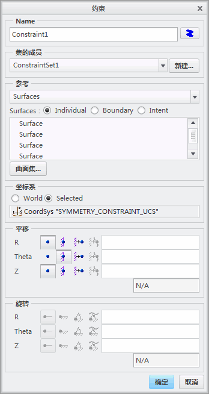8. 在功能区中，选择“主页”(Home) 选项卡。
9. 在“约束”(Constraints) 组中单击“位移”(Displacement)
。将出现“约束”(Constraint) 对话框。
10. 选择在模型上显示的曲面。
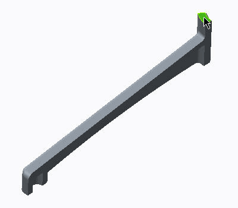11. 完成如图所示的对话框其余部分，然后单击“确定”(OK)。
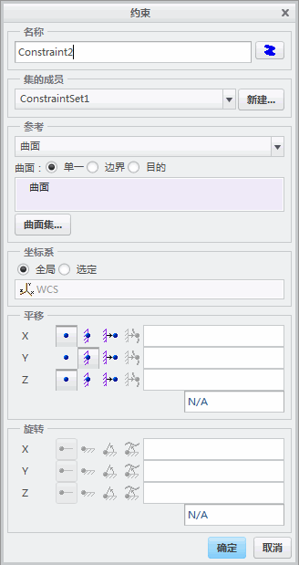
-
任务 2. 在模型中定义载荷。
1. 在功能区中，选择“主页”(Home) 选项卡。
2. 在“载荷”(Loads) 组中单击“力/力矩载荷”(Force/Moment Load)
 。将出现“力/力矩载荷”(Force/Moment Load) 对话框。
。将出现“力/力矩载荷”(Force/Moment Load) 对话框。
3. 选择如图所示的弯曲曲面。
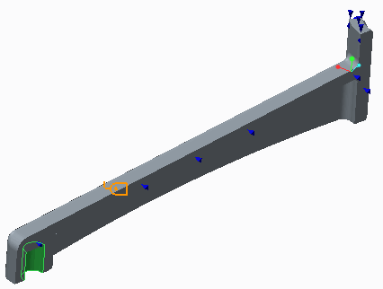4. 在“力”(Force) 部分的 Y 字段中键入 450。
5. 单击“预览”(Preview) 以查看载荷分布。
6. 单击“确定”(OK)。
-
任务 3. 定义并运行静态分析。
1. 在功能区中，选择“主页”(Home) 选项卡。
2. 在“运行”(Run) 组中单击“分析和研究”(Analyses and Studies)
 。将出现“分析和设计研究”(Analyses and Design Studies) 对话框。
。将出现“分析和设计研究”(Analyses and Design Studies) 对话框。
3. 单击“文件”(File) > “新建静态分析”(New Static)。将出现“静态分析定义”(Static Analysis Definition) 对话框。
4. 完成对话框，如图所示。
5. 单击“确定”(OK)。
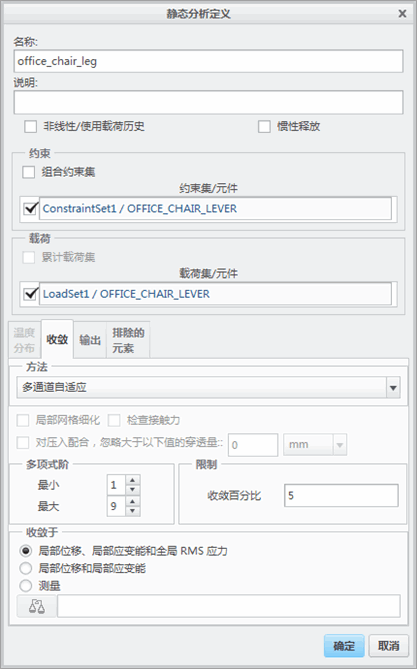6. 在“分析和设计研究”(Analyses and Design Studies) 对话框中，单击“运行”(Run) > “设置”(Settings)。将出现“运行设置”(Run Settings) 对话框。
7. 查看默认设置并单击“确定”(OK)。
8. 在“分析和设计研究”(Analyses and Design Studies) 对话框中，单击“开始运行”(Start Run)
 。
。
9. 在“问题”(Question) 对话框中单击“是”(Yes)。
10. 单击“显示研究状况”(Display Study Status)
 以监视运行。将出现“运行状况”(Run Status) 对话框。
以监视运行。将出现“运行状况”(Run Status) 对话框。
11. 运行完成之后，查看“运行状况”(Run Status) 对话框中显示的信息。注意应力和变形的最大值，还要检查求解的收敛百分比。
在“汇总报告”中所报告的值可帮助您仅了解正在查找的数量的模。您需要创建条纹/矢量图和图形以更好地解释结果。这些图可帮助您查找最大应力位置和已变形的形状。
12. 在“运行状况”(Run Status) 对话框中，单击“关闭”(Close)。
13. 在“诊断”(Diagnostics) 对话框中，单击“关闭”(Close)。
-
任务 4. 创建结果窗口并检查结果。
1. 在“分析和设计研究”(Analyses and Design Studies) 对话框中，选择刚完成的分析。
2. 单击“结果”(Results) > “定义结果窗口”(Define Result Window)。将出现“结果窗口定义”(Result Window Definition) 对话框。
3. 创建并检查下列四个结果窗口：
- 失效指标
- 最大位移量级
- 主应力收敛图形
- P 级图
请注意，孔中心的最大变形约为 1.25 mm。
4. 在“Creo Simulate 结果”(Creo Simulate Results) 窗口中，单击“文件”(File) > “退出结果”(Exit Results)。
5. 在“消息”(Message) 对话框中单击“否”(No)。
6. 在“分析和设计研究”(Analyses and Design Studies) 对话框中，单击“关闭”(Close)。
-
任务 5. 在模型中定义强制位移约束。
1. 在功能区中，选择“主页”(Home) 选项卡。
2. 在“约束”(Constraints) 组中单击“位移”(Displacement)
。将出现“约束”(Constraint) 对话框。
3. 选择孔的内部曲面，如图所示。
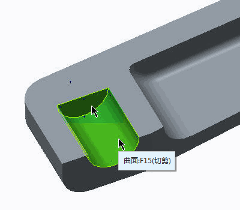4. 在“平移”(Translation) 部分中，单击“规定的平移”(Prescribed Translation) 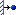 用于 Y 平移。
5. 在“Y 平移”(Y translation) 字段中键入 1.25。
6. 单击“确定”(OK)。
-
任务 6. 定义合力测量。
1. 在功能区中，选择“主页”(Home) 选项卡。
2. 在“运行”(Run) 组中单击“测量”(Measures)
 。将出现“测量”(Measures) 对话框。
。将出现“测量”(Measures) 对话框。
3. 单击“新建”(New)。将出现“测量定义”(Measure Definition) 对话框。
4. 完成对话框，如图所示。在选择曲面时，选择 SURF:F12(PROTRUSION)，即先前步骤中约束的相同的顶部曲面。
5. 单击“确定”(OK)。
6. 在“测量”(Measures) 对话框中，单击“关闭”(Close)。
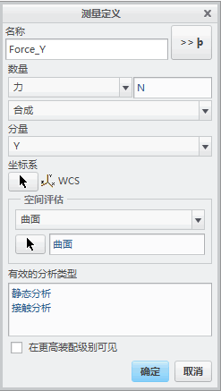
-
任务 7. 定义新静态分析。
1. 在功能区中，选择“主页”(Home) 选项卡。
2. 在“运行”(Run) 组中单击“分析和研究”(Analyses and Studies)
。将出现“分析和设计研究”(Analyses and Design Studies) 对话框。
3. 单击“文件”(File) > “新建静态分析”(New Static)。将出现“静态分析定义”(Static Analysis Definition) 对话框。
4. 完成对话框，如图所示。
5. 单击“确定”(OK)。
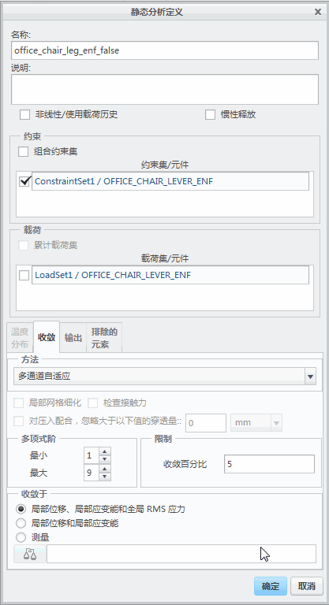6. 在“分析和设计研究”(Analyses and Design Studies) 对话框中选择新的分析，然后单击“开始运行”(Start Run)
。
7. 在“问题”(Question) 对话框中单击“是”(Yes)。
8. 在随后的两个对话框中单击“确认”(Confirm)。
9. 单击“显示研究状况”(Display Study Status)
以监视运行。将出现“运行状况”(Run Status) 对话框。
10. 运行完成之后，查看“运行状况”(Run Status) 对话框中显示的信息。注意应力和变形的最大值，还要检查求解的收敛百分比。
11. 在“运行状况”(Run Status) 对话框中，单击“关闭”(Close)。
12. 在“诊断”(Diagnostics) 对话框中，单击“关闭”(Close)。
-
任务 8. 创建结果窗口并检查结果。
1. 在“分析和设计研究”(Analyses and Design Studies) 对话框中，选择刚完成的分析。
2. 单击“结果”(Results) > “定义结果窗口”(Define Result Window)。将出现“结果窗口定义”(Result Window Definition) 对话框。
3. 创建并检查下列三个结果窗口：
- 失效指标
- 最大位移量级条纹图
- 最大主应力条纹图
将已变形的形状与之前估算的形状做比较。注意，这与之前的形状和预期形状不同。已变形的形状说明以这种方式应用强制的 (规定的) 位移会导致错误的结果。会在该区域形成不切实际的严重局部变形。模型现在过约束，并且已引起弯曲力矩。
4. 在“Creo Simulate 结果”(Creo Simulate Results) 窗口中，单击“文件”(File) > “退出结果”(Exit Results)。
5. 在“消息”(Message) 对话框中单击“否”(No)。
6. 在“分析和设计研究”(Analyses and Design Studies) 对话框中，单击“关闭”(Close)。
-
任务 9. 模型受力链接弹簧连接。
1. 在模型树中，展开“载荷/约束”(Loads/Constraints)。
2. 展开“约束集”(Constraint Set)。
3. 右键单击上一个约束集，然后选择“删除”(Delete)。在“确认”(Confirmation) 对话框中单击“是”(Yes)。
4. 在功能区中，选择“精细模型”(Refine Model) 选项卡。
5. 从“连接”(Connections) 组中单击“受力连接”(Weighted Link)
 。将出现“受力连接定义”(Weighted Link Definition) 对话框。
。将出现“受力连接定义”(Weighted Link Definition) 对话框。
6. 从“独立侧”(Independent Side) 下拉列表中选择“曲面”(Surfaces)。
7. 按住 CTRL 键并在模型中选择如图所示的圆柱曲面和平曲面。
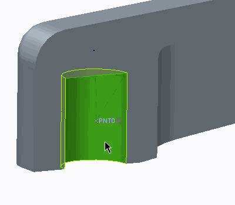8. 单击“从属侧”(Dependent Side) 部分的“点”(Point) 字段，然后在模型上选择点 POINT0，如图所示。
9. 单击“确定”(OK)。
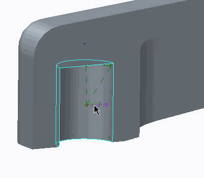10. 在功能区中，选择“精细模型”(Refine Model) 选项卡。
11. 在“理想化”(Idealizations) 组中单击“弹簧”(Spring)
 。将出现“弹簧定义”(Spring Definition) 对话框。
。将出现“弹簧定义”(Spring Definition) 对话框。
12. 完成如图所示的对话框，在模型中选择指定的点。
13. 单击“确定”(OK)。
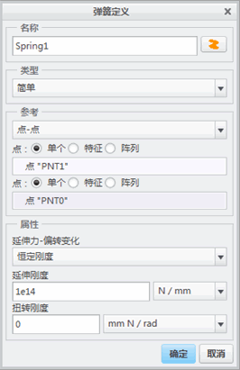
-
任务 10. 在模型中定义新的强制位移约束。
1. 在功能区中，选择“主页”(Home) 选项卡。
2. 在“约束”(Constraints) 组中单击“位移”(Displacement)
。将出现“约束”(Constraint) 对话框。
3. 从“参考”(References) 下拉列表中选择“点”(Points)。
4. 选择如图所示的基准点。
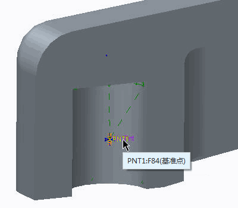5. 在“平移”(Translation) 部分中，单击“规定的平移”(Prescribed Translation) 用于 Y 平移。
6. 在“Y 平移”(Y translation) 字段中键入 1.25。
7. 在“旋转”(Rotation) 部分中，单击“固定的旋转”(Fixed Rotation)
 用于 X、Y 和 Z 旋转。
用于 X、Y 和 Z 旋转。
8. 单击“确定”(OK)。
-
任务 11. 定义新静态分析。
1. 在功能区中，选择“主页”(Home) 选项卡。
2. 在“运行”(Run) 组中单击“分析和研究”(Analyses and Studies)
。将出现“分析和设计研究”(Analyses and Design Studies) 对话框。
3. 单击“文件”(File) > “新建静态分析”(New Static)。将出现“静态分析定义”(Static Analysis Definition) 对话框。
4. 完成对话框，如图所示。
5. 单击“确定”(OK)。
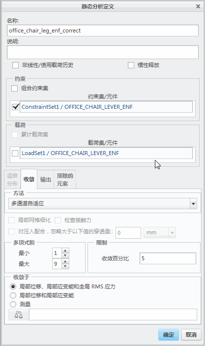6. 在“分析和设计研究”(Analyses and Design Studies) 对话框中选择新的分析，然后单击“开始运行”(Start Run)
。
7. 在“问题”(Question) 对话框中单击“是”(Yes)。
8. 单击“显示研究状况”(Display Study Status)
以监视运行。将出现“运行状况”(Run Status) 对话框。
9. 运行完成之后，查看“运行状况”(Run Status) 对话框中显示的信息。注意应力和变形的最大值，还要检查求解的收敛百分比。
10. 在“运行状况”(Run Status) 对话框中，单击“关闭”(Close)。
11. 在“诊断”(Diagnostics) 对话框中，单击“关闭”(Close)。
-
任务 12. 创建结果窗口并检查结果。
1. 在“分析和设计研究”(Analyses and Design Studies) 对话框中，选择刚完成的分析。
2. 单击“结果”(Results) > “定义结果窗口”(Define Result Window)。将出现“结果窗口定义”(Result Window Definition) 对话框。
3. 创建并检查下列四个结果窗口：
- 失效指标
- 最大位移量级条纹图
- 最大主应力条纹图
- 最大主应力收敛图形
将新的已变形形状与之前估算的形状做比较。检查模型中变形的形状和应力分布，并将它们与先前的两个结果做比较。
4. 在“Creo Simulate 结果”(Creo Simulate Results) 窗口中，单击“文件”(File) > “退出结果”(Exit Results)。
5. 在“消息”(Message) 对话框中单击“否”(No)。
6. 在“分析和设计研究”(Analyses and Design Studies) 对话框中，单击“关闭”(Close)。
7. 单击“文件”(File) > “管理”(Manage) > “拭除当前”(Erase Current)。
8. 在对话框中单击“是”(Yes)。
练习就此结束。
| 标记完成并返回 |